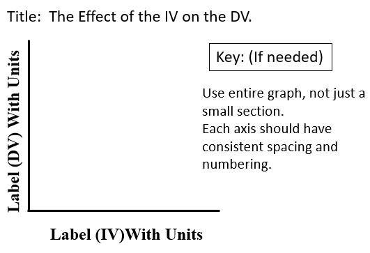

Goal 1: Define the parts of the Experimental Design.
Scientific experiments allow scientists to test hypotheses and find out how something happens. Watch this video for more information.
The independent variable in an experiment is a condition that is manipulated or changed by a scientist.
There should only be one independent variable in an experiment. This makes sure only one thing is affecting the experiment.
The dependent variable is observed and measured during an experiment. It responds to the independent variable.
The conditions that do not change during an experiment are known as constants.
An experimental group is the group that receives the change.
The control group does not receive the change. A control group is used to compare the results of the experimental groups.
The hypothesis is what you think will happen in the experiment. When writing a hypothesis, you use the following format:
If independent variable, then dependent variable. You explain what you are doing to the independent variable and tell what you think will happen to the dependent variable as a result of what you did to the independent variable.
Multiple trials are used to increase the reliability of results.
Read this article for more information.

Goal 2: Apply Experimental Design knowledge to an experiment to identify the parts of the experimental design.
Here is an example of an experiment. A scientist wanted to know if fertilizer affected plant growth.
He had 4 of the same plants. Each plant was in the same pot. Each plant had the same amount of soil, water, and sunlight daily.
He labeled the plants A, B, C, and D. Plant A was given 5 grams of fertilizer. Plant B was given 10 grams of fertilizer.
Plant C was given 15 grams of fertilizer. Plant D did not have any fertilizer. He measured the plants for 30 days.
He recorded his data each day.
The independent variable would be the amount of fertilizer.
The dependent variable would be the plant growth.
The constants would be the amount of water, soil, and sunlight. The same type of plants is another type of constant.
The experimental group is plant A, B, and C.
The control group is plant D.
Example Hypothesis: If the plant receives 15 grams of fertilizer then it will grow tallest.
Watch this video for more information.

Goal 3: Graph the data from an experimental design experiment.
A graph is a pictorial representation of data used to show a relationship between two or more factors.
Regardless of the type of graph used to display data, all graphs need to have the following properties:
a descriptive title, such as: The Effect of Independent Variable on Dependent Variable.
labels and appropriate units of measurement
legend or key if needed
equal spacing on the numbering scale
use of the entire graphing area
Line, Bar and Pie Graphs
A line graph has one or more lines connecting a series of data points.
A line graph is often the best choice for showing how an independent variable is related to a dependent variable.
The independent variable is graphed on the x-axis and the dependent variable is graphed on the y-axis.
Multiple lines can be drawn to represent multiple data sets; a key must be included for this situation.
A bar graph uses a series of columns, or bars, to display data.
A bar graph is useful when the data is not continuous but categorical.
A numerical scale is used to determine the lengths of the bars.
Lengths of bars are used to represent and compare data.
A pie chart is used to represent the parts of a whole.
A pie chart is also known as a circle graph.
Each section of a pie chart represents the frequency of each category’s occurrence.